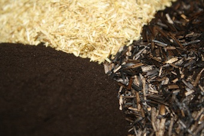
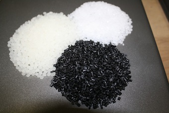

Materials
c2renew designs custom formulations for each customer to produce a biocomposite specifically for
their application. We can work with your company at the design stage to tailor make the biocomposite
for the part as well as help design the part for the application. If the part is already designed or in
production, we can also produce a biocomposite formulation which will serve as a drop in replacement
for a polymer.
c2renew has experience working with a wide variety of thermoplastics including PP, PE,
PLA, ABS, ABS/PC, PA and more. We have experience using a multitude of agricultural inputs as fillers in
our materials such as flax fiber, flax shive, wood flour, sunflower hull, dried distiller grains with solubles,
soybean hull, oat hull, sugar beet pulp, etc. With our experience and technology, our formulations
are dependent on no single biomass source; we can use different combinations to maintain the same
properties and cost. For higher temperature thermoplastics such as ABS or PA, we use thermally
stabilized biomass to prevent off gassing during production.

